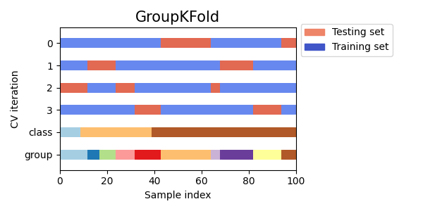

Note
Click here to download the full example code or to run this example in your browser via Binder
Visualizing cross-validation behavior in scikit-learn¶
Choosing the right cross-validation object is a crucial part of fitting a model properly. There are many ways to split data into training and test sets in order to avoid model overfitting, to standardize the number of groups in test sets, etc.
This example visualizes the behavior of several common scikit-learn objects for comparison.
from sklearn.model_selection import (TimeSeriesSplit, KFold, ShuffleSplit,
StratifiedKFold, GroupShuffleSplit,
GroupKFold, StratifiedShuffleSplit)
import numpy as np
import matplotlib.pyplot as plt
from matplotlib.patches import Patch
np.random.seed(1338)
cmap_data = plt.cm.Paired
cmap_cv = plt.cm.coolwarm
n_splits = 4
Visualize our data¶
First, we must understand the structure of our data. It has 100 randomly generated input datapoints, 3 classes split unevenly across datapoints, and 10 “groups” split evenly across datapoints.
As we’ll see, some cross-validation objects do specific things with labeled data, others behave differently with grouped data, and others do not use this information.
To begin, we’ll visualize our data.
# Generate the class/group data
n_points = 100
X = np.random.randn(100, 10)
percentiles_classes = [.1, .3, .6]
y = np.hstack([[ii] * int(100 * perc)
for ii, perc in enumerate(percentiles_classes)])
# Evenly spaced groups repeated once
groups = np.hstack([[ii] * 10 for ii in range(10)])
def visualize_groups(classes, groups, name):
# Visualize dataset groups
fig, ax = plt.subplots()
ax.scatter(range(len(groups)), [.5] * len(groups), c=groups, marker='_',
lw=50, cmap=cmap_data)
ax.scatter(range(len(groups)), [3.5] * len(groups), c=classes, marker='_',
lw=50, cmap=cmap_data)
ax.set(ylim=[-1, 5], yticks=[.5, 3.5],
yticklabels=['Data\ngroup', 'Data\nclass'], xlabel="Sample index")
visualize_groups(y, groups, 'no groups')

Define a function to visualize cross-validation behavior¶
We’ll define a function that lets us visualize the behavior of each cross-validation object. We’ll perform 4 splits of the data. On each split, we’ll visualize the indices chosen for the training set (in blue) and the test set (in red).
def plot_cv_indices(cv, X, y, group, ax, n_splits, lw=10):
"""Create a sample plot for indices of a cross-validation object."""
# Generate the training/testing visualizations for each CV split
for ii, (tr, tt) in enumerate(cv.split(X=X, y=y, groups=group)):
# Fill in indices with the training/test groups
indices = np.array([np.nan] * len(X))
indices[tt] = 1
indices[tr] = 0
# Visualize the results
ax.scatter(range(len(indices)), [ii + .5] * len(indices),
c=indices, marker='_', lw=lw, cmap=cmap_cv,
vmin=-.2, vmax=1.2)
# Plot the data classes and groups at the end
ax.scatter(range(len(X)), [ii + 1.5] * len(X),
c=y, marker='_', lw=lw, cmap=cmap_data)
ax.scatter(range(len(X)), [ii + 2.5] * len(X),
c=group, marker='_', lw=lw, cmap=cmap_data)
# Formatting
yticklabels = list(range(n_splits)) + ['class', 'group']
ax.set(yticks=np.arange(n_splits+2) + .5, yticklabels=yticklabels,
xlabel='Sample index', ylabel="CV iteration",
ylim=[n_splits+2.2, -.2], xlim=[0, 100])
ax.set_title('{}'.format(type(cv).__name__), fontsize=15)
return ax
Let’s see how it looks for the KFold
cross-validation object:
fig, ax = plt.subplots()
cv = KFold(n_splits)
plot_cv_indices(cv, X, y, groups, ax, n_splits)
Out:
<AxesSubplot:title={'center':'KFold'}, xlabel='Sample index', ylabel='CV iteration'>
As you can see, by default the KFold cross-validation iterator does not
take either datapoint class or group into consideration. We can change this
by using the StratifiedKFold like so.
fig, ax = plt.subplots()
cv = StratifiedKFold(n_splits)
plot_cv_indices(cv, X, y, groups, ax, n_splits)
Out:
<AxesSubplot:title={'center':'StratifiedKFold'}, xlabel='Sample index', ylabel='CV iteration'>
In this case, the cross-validation retained the same ratio of classes across each CV split. Next we’ll visualize this behavior for a number of CV iterators.
Visualize cross-validation indices for many CV objects¶
Let’s visually compare the cross validation behavior for many scikit-learn cross-validation objects. Below we will loop through several common cross-validation objects, visualizing the behavior of each.
Note how some use the group/class information while others do not.
cvs = [KFold, GroupKFold, ShuffleSplit, StratifiedKFold,
GroupShuffleSplit, StratifiedShuffleSplit, TimeSeriesSplit]
for cv in cvs:
this_cv = cv(n_splits=n_splits)
fig, ax = plt.subplots(figsize=(6, 3))
plot_cv_indices(this_cv, X, y, groups, ax, n_splits)
ax.legend([Patch(color=cmap_cv(.8)), Patch(color=cmap_cv(.02))],
['Testing set', 'Training set'], loc=(1.02, .8))
# Make the legend fit
plt.tight_layout()
fig.subplots_adjust(right=.7)
plt.show()

- 


Total running time of the script: ( 0 minutes 0.613 seconds)